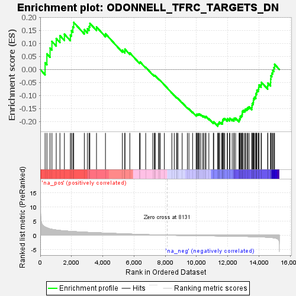
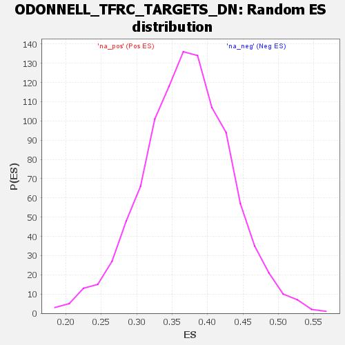

| Dataset | DGErankName |
| Phenotype | NoPhenotypeAvailable |
| Upregulated in class | na_neg |
| GeneSet | ODONNELL_TFRC_TARGETS_DN |
| Enrichment Score (ES) | -0.21793029 |
| Normalized Enrichment Score (NES) | NaN |
| Nominal p-value | NaN |
| FDR q-value | 1.0 |
| FWER p-Value | 0.0 |

| SYMBOL | RANK IN GENE LIST | RANK METRIC SCORE | RUNNING ES | CORE ENRICHMENT | |
|---|---|---|---|---|---|
| 1 | GNAQ | 310 | 2.896 | 0.0260 | No |
| 2 | TP63 | 425 | 2.594 | 0.0600 | No |
| 3 | CD151 | 627 | 2.219 | 0.0823 | No |
| 4 | FKBP5 | 747 | 2.079 | 0.1078 | No |
| 5 | MON2 | 1022 | 1.825 | 0.1190 | No |
| 6 | TNRC6A | 1259 | 1.660 | 0.1300 | No |
| 7 | LRRC58 | 1545 | 1.519 | 0.1355 | No |
| 8 | GINS3 | 1927 | 1.365 | 0.1323 | No |
| 9 | TUBD1 | 1997 | 1.334 | 0.1491 | No |
| 10 | NPNT | 2086 | 1.294 | 0.1641 | No |
| 11 | NFIA | 2141 | 1.272 | 0.1809 | No |
| 12 | ACACA | 2819 | 1.063 | 0.1533 | No |
| 13 | SCD | 3021 | 1.004 | 0.1562 | No |
| 14 | MAP4K2 | 3125 | 0.979 | 0.1651 | No |
| 15 | TFRC | 3176 | 0.967 | 0.1773 | No |
| 16 | G3BP1 | 3599 | 0.862 | 0.1633 | No |
| 17 | SETMAR | 4172 | 0.732 | 0.1373 | No |
| 18 | DCP2 | 5253 | 0.489 | 0.0740 | No |
| 19 | GALT | 5413 | 0.462 | 0.0709 | No |
| 20 | FBXL20 | 5415 | 0.461 | 0.0783 | No |
| 21 | TCEAL3 | 5730 | 0.397 | 0.0639 | No |
| 22 | BPTF | 6352 | 0.266 | 0.0273 | No |
| 23 | BRCA2 | 6396 | 0.257 | 0.0286 | No |
| 24 | ANKRD50 | 6747 | 0.200 | 0.0087 | No |
| 25 | HELLS | 7201 | 0.121 | -0.0192 | No |
| 26 | TADA2A | 7304 | 0.107 | -0.0242 | No |
| 27 | NRTN | 7318 | 0.106 | -0.0233 | No |
| 28 | POLE2 | 7354 | 0.100 | -0.0240 | No |
| 29 | SLC12A1 | 7566 | 0.072 | -0.0368 | No |
| 30 | FUS | 7615 | 0.063 | -0.0389 | No |
| 31 | CFL2 | 7678 | 0.055 | -0.0421 | No |
| 32 | ANLN | 7939 | 0.022 | -0.0589 | No |
| 33 | FBXO5 | 8421 | -0.032 | -0.0901 | No |
| 34 | DEPDC1B | 8573 | -0.049 | -0.0992 | No |
| 35 | ITPRID1 | 8722 | -0.065 | -0.1080 | No |
| 36 | DSCAM | 8745 | -0.067 | -0.1083 | No |
| 37 | ZBTB6 | 8812 | -0.076 | -0.1115 | No |
| 38 | ACVR2B | 9080 | -0.106 | -0.1274 | No |
| 39 | FGF22 | 9415 | -0.137 | -0.1472 | No |
| 40 | RTP1 | 9512 | -0.145 | -0.1512 | No |
| 41 | LIN28B | 9747 | -0.167 | -0.1639 | No |
| 42 | RAD54B | 9975 | -0.183 | -0.1759 | No |
| 43 | DIAPH3 | 9989 | -0.184 | -0.1738 | No |
| 44 | DNA2 | 10005 | -0.185 | -0.1719 | No |
| 45 | TOP2A | 10076 | -0.191 | -0.1734 | No |
| 46 | MEX3C | 10094 | -0.192 | -0.1714 | No |
| 47 | HMMR | 10148 | -0.196 | -0.1718 | No |
| 48 | TSBP1 | 10184 | -0.199 | -0.1709 | No |
| 49 | FANCD2 | 10274 | -0.204 | -0.1735 | No |
| 50 | TTC9B | 10400 | -0.215 | -0.1783 | No |
| 51 | RRM2 | 10466 | -0.219 | -0.1791 | No |
| 52 | RIF1 | 10567 | -0.226 | -0.1820 | No |
| 53 | PLK4 | 10601 | -0.229 | -0.1805 | No |
| 54 | H3C7 | 10789 | -0.242 | -0.1890 | No |
| 55 | BUB1B | 11074 | -0.263 | -0.2035 | No |
| 56 | SURF1 | 11100 | -0.266 | -0.2009 | No |
| 57 | SAMM50 | 11360 | -0.286 | -0.2134 | Yes |
| 58 | KBTBD8 | 11367 | -0.286 | -0.2092 | Yes |
| 59 | RAD1 | 11404 | -0.289 | -0.2069 | Yes |
| 60 | ZFAND4 | 11451 | -0.294 | -0.2052 | Yes |
| 61 | CENPE | 11467 | -0.295 | -0.2015 | Yes |
| 62 | SPC25 | 11589 | -0.305 | -0.2046 | Yes |
| 63 | SGO2 | 11662 | -0.311 | -0.2043 | Yes |
| 64 | CDKN3 | 11665 | -0.311 | -0.1995 | Yes |
| 65 | CENPA | 11674 | -0.312 | -0.1950 | Yes |
| 66 | MND1 | 11699 | -0.314 | -0.1916 | Yes |
| 67 | BUB1 | 11741 | -0.318 | -0.1892 | Yes |
| 68 | KIF14 | 11805 | -0.323 | -0.1882 | Yes |
| 69 | DEPDC1 | 11968 | -0.338 | -0.1934 | Yes |
| 70 | CDK1 | 11977 | -0.339 | -0.1885 | Yes |
| 71 | CCDC148 | 12114 | -0.352 | -0.1918 | Yes |
| 72 | ECT2 | 12130 | -0.353 | -0.1872 | Yes |
| 73 | TTK | 12280 | -0.368 | -0.1911 | Yes |
| 74 | TAF5 | 12388 | -0.377 | -0.1921 | Yes |
| 75 | ASPM | 12407 | -0.379 | -0.1872 | Yes |
| 76 | CDC6 | 12499 | -0.389 | -0.1870 | Yes |
| 77 | BIRC5 | 12719 | -0.411 | -0.1948 | Yes |
| 78 | VSNL1 | 12748 | -0.415 | -0.1900 | Yes |
| 79 | CEP55 | 12791 | -0.421 | -0.1860 | Yes |
| 80 | KRT35 | 12795 | -0.422 | -0.1795 | Yes |
| 81 | KIF11 | 12864 | -0.431 | -0.1771 | Yes |
| 82 | NSD2 | 12917 | -0.437 | -0.1735 | Yes |
| 83 | HSPH1 | 12926 | -0.438 | -0.1670 | Yes |
| 84 | CCNB1 | 12929 | -0.438 | -0.1601 | Yes |
| 85 | CENPF | 12995 | -0.446 | -0.1572 | Yes |
| 86 | NDC80 | 13091 | -0.457 | -0.1562 | Yes |
| 87 | FOXM1 | 13136 | -0.464 | -0.1517 | Yes |
| 88 | CKAP2L | 13227 | -0.476 | -0.1500 | Yes |
| 89 | CKS1B | 13283 | -0.484 | -0.1458 | Yes |
| 90 | CDC20 | 13363 | -0.495 | -0.1431 | Yes |
| 91 | KIF20A | 13534 | -0.519 | -0.1460 | Yes |
| 92 | PRC1 | 13550 | -0.522 | -0.1386 | Yes |
| 93 | TACC3 | 13561 | -0.524 | -0.1309 | Yes |
| 94 | KIF4A | 13622 | -0.534 | -0.1263 | Yes |
| 95 | CHAF1A | 13640 | -0.537 | -0.1188 | Yes |
| 96 | CCNA2 | 13658 | -0.540 | -0.1113 | Yes |
| 97 | AURKA | 13711 | -0.549 | -0.1059 | Yes |
| 98 | DBF4 | 13794 | -0.563 | -0.1023 | Yes |
| 99 | NUP50 | 13795 | -0.563 | -0.0933 | Yes |
| 100 | MKI67 | 13850 | -0.571 | -0.0877 | Yes |
| 101 | GTSE1 | 13861 | -0.575 | -0.0792 | Yes |
| 102 | SHCBP1 | 13953 | -0.590 | -0.0757 | Yes |
| 103 | AURKB | 13979 | -0.597 | -0.0678 | Yes |
| 104 | PLK1 | 13998 | -0.602 | -0.0593 | Yes |
| 105 | DLGAP5 | 14131 | -0.631 | -0.0579 | Yes |
| 106 | APBB1 | 14155 | -0.636 | -0.0493 | Yes |
| 107 | ERCC6L | 14551 | -0.751 | -0.0632 | Yes |
| 108 | NCAPH | 14565 | -0.757 | -0.0520 | Yes |
| 109 | FAM181B | 14736 | -0.832 | -0.0498 | Yes |
| 110 | FETUB | 14744 | -0.835 | -0.0369 | Yes |
| 111 | TOX4 | 14756 | -0.840 | -0.0242 | Yes |
| 112 | RANBP1 | 14819 | -0.870 | -0.0143 | Yes |
| 113 | FAM83D | 14875 | -0.900 | -0.0035 | Yes |
| 114 | CASP14 | 14947 | -0.956 | 0.0071 | Yes |
| 115 | MYBL2 | 14993 | -0.989 | 0.0200 | Yes |
